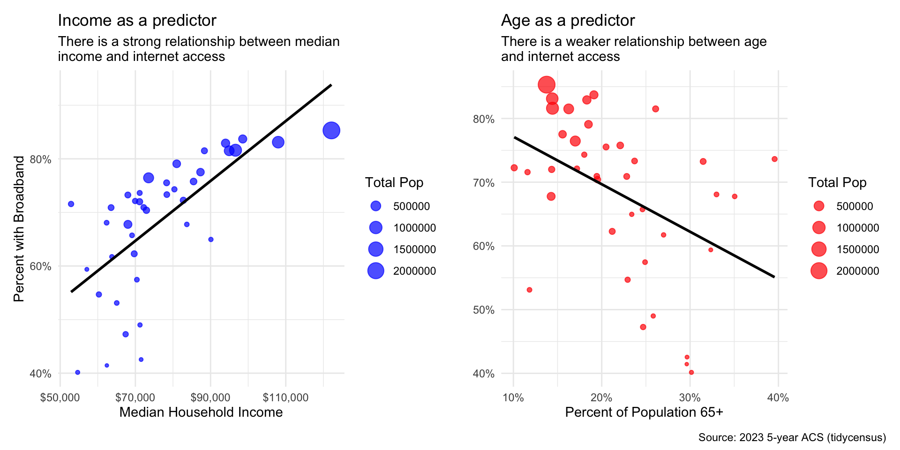
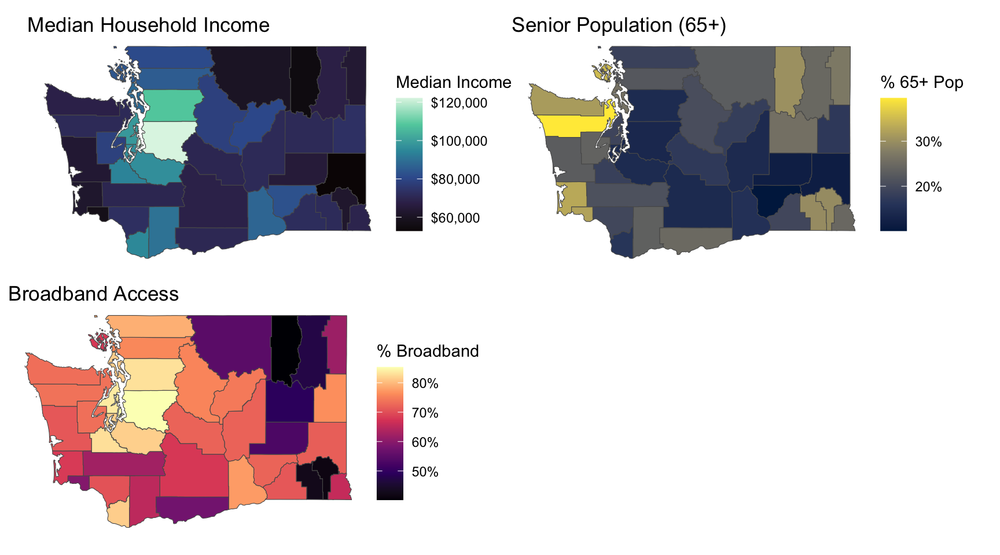
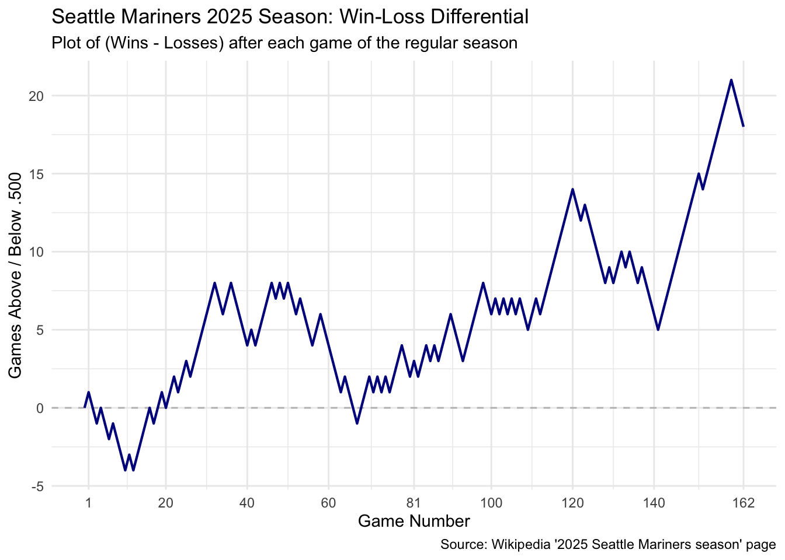

state_abbr <- "WA"
target_year <- 2023
acs_survey <- "acs5"Statistical Programming Paradigms: Project 2
View the Project Repo
Part 1
Question:
Is access to broadband internet in Washington State’s counties better explained by age or affordability?
This analysis investigates the relationship between three county-level variables in Washington State: the percentage of households with broadband, the percentage of the population aged 65 or older, and the median household income. The goal is to determine which factor, age or income, has a stronger correlation with broadband subscription rates.
To explore this, I plan to visualize the data in three main ways:
A set of side-by-side scatter plots. The first plot will show Median Income vs. Broadband Access, and the second will show Percent 65+ vs. Broadband Access. This will allow for a direct visual comparison of the strength and direction of each continuous relationship.
A pair of side by side boxplots. This will involve binning counties into quartiles (Lowest to Highest) based on their median income and senior population. This plot will help compare the median and distribution of broadband access across these distinct groups, showing how moving from the lowest to highest group for each variable impacts access.
A set of three maps to visualize the geographic distribution of each key variable (broadband access, senior population, and median income) side-by-side. This will help identify if the spatial pattern of broadband access more closely matches the pattern of income or age.
Data Extraction and Cleaning
The analysis is set to run for Washington State using data from the 2023 5-year American Community Survey (ACS), since this is the most recent available data.
internet_vars <- c(
total_hh = "B28011_001",
broadband_hh = "B28011_004"
)
internet_file_path <- "data/wa_internet_raw.rds"
if (!file_exists(internet_file_path)) {
wa_internet_raw <- get_acs(
geography = "county",
state = state_abbr,
variables = internet_vars,
year = target_year,
survey = acs_survey,
geometry = TRUE
)
write_rds(wa_internet_raw, internet_file_path)
} else {
wa_internet_raw <- read_rds(internet_file_path)
}
head(wa_internet_raw)Simple feature collection with 6 features and 5 fields
Geometry type: MULTIPOLYGON
Dimension: XY
Bounding box: xmin: -123.3727 ymin: 46.38346 xmax: -121.3532 ymax: 48.41156
Geodetic CRS: NAD83
GEOID NAME variable estimate moe
1 53067 Thurston County, Washington total_hh 117172 764
2 53067 Thurston County, Washington broadband_hh 97149 1417
3 53029 Island County, Washington total_hh 35529 624
4 53029 Island County, Washington broadband_hh 28957 738
5 53041 Lewis County, Washington total_hh 32314 414
6 53041 Lewis County, Washington broadband_hh 20125 686
geometry
1 MULTIPOLYGON (((-123.2009 4...
2 MULTIPOLYGON (((-123.2009 4...
3 MULTIPOLYGON (((-122.5389 4...
4 MULTIPOLYGON (((-122.5389 4...
5 MULTIPOLYGON (((-123.371 46...
6 MULTIPOLYGON (((-123.371 46...To get the total 65+ population, map_chr() is used to programmatically generate the list of all male and female senior age bracket variable IDs. The data is then saved locally as an .rds file to avoid repeat API calls.
age_vars_65plus_male <- map_chr(20:25, ~ paste0("B01001_0", .x))
age_vars_65plus_female <- map_chr(44:49, ~ paste0("B01001_0", .x))
age_vars <- c(
total_pop = "B01001_001",
age_vars_65plus_male,
age_vars_65plus_female
)
age_file_path <- "data/wa_age_raw.rds"
if (!file_exists(age_file_path)) {
wa_age_raw <- get_acs(
geography = "county",
state = state_abbr,
variables = age_vars,
year = target_year,
survey = acs_survey,
geometry = FALSE
)
write_rds(wa_age_raw, age_file_path)
} else {
wa_age_raw <- read_rds(age_file_path)
}
head(wa_age_raw)# A tibble: 6 × 5
GEOID NAME variable estimate moe
<chr> <chr> <chr> <dbl> <dbl>
1 53001 Adams County, Washington "total_pop" 20690 NA
2 53001 Adams County, Washington "" 194 64
3 53001 Adams County, Washington "" 293 79
4 53001 Adams County, Washington "" 294 73
5 53001 Adams County, Washington "" 208 94
6 53001 Adams County, Washington "" 129 54income_vars <- c(
median_income = "B19013_001"
)
income_file_path <- "data/wa_income_raw.rds"
if (!file_exists(income_file_path)) {
wa_income_raw <- get_acs(
geography = "county",
state = state_abbr,
variables = income_vars,
year = target_year,
survey = acs_survey,
geometry = FALSE
)
write_rds(wa_income_raw, income_file_path)
} else {
wa_income_raw <- read_rds(income_file_path)
}
head(wa_income_raw)# A tibble: 6 × 5
GEOID NAME variable estimate moe
<chr> <chr> <chr> <dbl> <dbl>
1 53001 Adams County, Washington median_income 65042 4825
2 53003 Asotin County, Washington median_income 69107 5408
3 53005 Benton County, Washington median_income 87316 2359
4 53007 Chelan County, Washington median_income 78306 5707
5 53009 Clallam County, Washington median_income 67999 2005
6 53011 Clark County, Washington median_income 94948 1484We then clean and merge the three raw datasets. The internet data is pivoted wide, the age data is summarized to sum all 65+ brackets, and percentages are calculated for both. Finally, the three clean data frames are put into a list and joined together using reduce().
wa_internet_clean <- wa_internet_raw %>%
select(GEOID, NAME, variable, estimate, geometry) %>%
pivot_wider(
names_from = variable,
values_from = estimate
) %>%
mutate(
pct_broadband = (broadband_hh / total_hh)
)
wa_age_clean <- wa_age_raw %>%
group_by(GEOID, NAME) %>%
summarize(
total_pop = estimate[variable == "total_pop"],
pop_65plus = sum(estimate[variable != "total_pop"]),
.groups = "drop"
) %>%
mutate(
pct_65plus = (pop_65plus / total_pop)
)
wa_income_clean <- wa_income_raw %>%
select(GEOID, median_income = estimate)
data_list_to_join <- list(
wa_internet_clean,
select(wa_age_clean, GEOID, total_pop, pop_65plus, pct_65plus),
select(wa_income_clean, GEOID, median_income)
)
final_data <- reduce(data_list_to_join, left_join, by = "GEOID")
head(final_data)Visualizations:
Visualization 1: Side-by-Side Scatter Plots
plot_income <- ggplot(final_data, aes(x = median_income, y = pct_broadband)) +
geom_point(aes(size = total_pop), alpha = 0.7, color = "blue") +
geom_smooth(method = "lm", se = FALSE, color = "black") +
scale_x_continuous(labels = scales::dollar_format()) +
scale_y_continuous(labels = scales::percent_format()) +
labs(
title = "Income as a predictor",
subtitle = "There is a strong relationship between median \nincome and internet access",
x = "Median Household Income",
y = "Percent with Broadband",
size = "Total Pop"
) +
theme_minimal()
plot_age <- ggplot(final_data, aes(x = pct_65plus, y = pct_broadband)) +
geom_point(aes(size = total_pop), alpha = 0.7, color = "red") +
geom_smooth(method = "lm", se = FALSE, color = "black") +
scale_x_continuous(labels = scales::percent_format()) +
scale_y_continuous(labels = scales::percent_format()) +
labs(
title = "Age as a predictor",
subtitle = "There is a weaker relationship between age \nand internet access",
x = "Percent of Population 65+",
y = "",
size = "Total Pop"
) +
theme_minimal()
(plot_income + plot_age) + plot_annotation(caption = "Source: 2023 5-year ACS (tidycensus)")
This plot directly compares the strength of our two predictors using geom_pointandgeom_smooth. The left plot shows Median Income vs. Broadband Access, while the right plot shows Senior Population vs. Broadband Access. The patchwork package combines them for a direct comparison.
Visualization 2: Side-by-Side Boxplots
data_with_bins <- final_data %>%
mutate(
income_quartile = cut_number(median_income, 4,
labels = c("Lowest", "Low-Mid", "High-Mid", "Highest")),
age_quartile = cut_number(pct_65plus, 4,
labels = c("Lowest", "Low-Mid", "High-Mid", "Highest"))
)
plot_box_income <- ggplot(data_with_bins, aes(x = income_quartile, y = pct_broadband)) +
geom_boxplot(aes(fill = income_quartile), show.legend = FALSE) +
geom_point(alpha = 0.4) +
scale_y_continuous(labels = scales::percent_format()) +
labs(
title = "Broadband Access by Income Quartile",
subtitle = "Counties grouped into four equal-sized bins",
x = "Median Income Quartile",
y = "Percent with Broadband"
) +
theme_minimal()
plot_box_age <- ggplot(data_with_bins, aes(x = age_quartile, y = pct_broadband)) +
geom_boxplot(aes(fill = age_quartile), show.legend = FALSE) +
geom_point(alpha = 0.4) +
scale_y_continuous(labels = scales::percent_format()) +
labs(
title = "Broadband Access by Senior (65+) Pop. Quartile",
subtitle = "Counties grouped into four equal-sized bins",
x = "Senior Population Quartile",
y = ""
) +
theme_minimal()
(plot_box_income + plot_box_age) + plot_annotation(caption = "Source: 2023 5-year ACS (tidycensus)")
This plot compares the variables by grouping counties into bins. First, cut_number()creates four equal-sized quartiles (Lowest to Highest) for both income and age. Then, geom_boxplot is used to visualize the distribution of broadband access within each of those groups.
Visualization 3: Maps
map_broadband <- ggplot(final_data) +
geom_sf(aes(fill = pct_broadband)) +
scale_fill_viridis_c(option = "A", labels = scales::percent) +
labs(title = "Broadband Access", fill = "% Broadband") +
theme_void()
map_65plus <- ggplot(final_data) +
geom_sf(aes(fill = pct_65plus)) +
scale_fill_viridis_c(option = "E", labels = scales::percent) +
labs(title = "Senior Population (65+)", fill = "% 65+ Pop") +
theme_void()
map_income <- ggplot(final_data) +
geom_sf(aes(fill = median_income)) +
scale_fill_viridis_c(option = "G", labels = scales::dollar) +
labs(title = "Median Household Income", fill = "Median Income") +
theme_void()
(map_income + map_65plus) / (map_broadband + plot_spacer()) +
plot_annotation(
title = "Geographic Distribution of Key Variables",
subtitle = "Comparing spatial patterns in Washington counties.",
caption = "Source: 2023 5-year ACS (tidycensus)")
This final visualization uses geom_sfto create three maps showing the geographic distribution of each key variable. One map is made for broadband access, one for median income, and one for the senior population.
Analysis:
This analysis investigates if broadband access in Washington State counties is better explained by population age or affordability. Data was sourced from the U.S. Census Bureau’s 2023 5-year American Community Survey (ACS) via the tidycensus API. Data for median household income, total population, and population 65+ were extracted. These were processed to create three key variables: percentage of population 65+, median household income, and percentage of households with broadband. The variables were then joined and analyzed for correlation and geographic distribution.
The analysis reveals that median household income is a significantly stronger predictor of broadband access than the county’s senior (65+) population. A strong, positive linear correlation exists between median income and broadband access rates. Conversely, the relationship between the senior population and broadband access was weaker and less conclusive. Geographic analysis confirmed this, as the spatial map of broadband access closely mirrored the map of median income, but not the map of the senior population.
This analysis has several limitations. First, the county-level data is subject to the ecological fallacy, meaning results cannot be assumed to apply to individuals. Second, the analysis does not control for the key confounding variable of infrastructure availability. Physical infrastructure, which often correlates with income, was not included. Finally, the ACS data provides estimates, and the “broadband” variable lacks details on connection speed or quality.
Part 2
This report details the process of scraping, cleaning, and visualizing the 2025 Seattle Mariners season game log from Wikipedia. The objective was to create a time-series visualization tracking the team’s performance relative to a .500 record (their win-loss differential) as the season progressed. This analysis uses the rvest package for web scraping and dplyr and ggplot2 for data manipulation and visualization.
Extracting and Cleaning Data
The first step was to collect the game-by-game data. The data for the 2025 season is hosted on Wikipedia and split into multiple HTML tables (one for each month). The rvest package was used to read the page’s HTML. A key challenge was that the game logs were not in a single table. By inspecting the page, I identified that the relevant tables were the 2nd through 7th instances of the .wikitable class. The code below selects these specific tables, then uses the map_dfr() function to iterate over them, extract the data from each, and bind them all into a single raw data frame. This raw data was then saved as an .rds file for reproducibility.
url <- "https://en.wikipedia.org/wiki/2025_Seattle_Mariners_season"
m_page <- read_html(url)
game_log_raw <- m_page %>%
html_elements("table.wikitable") %>%
.[c(2, 3, 4, 5, 6, 7)] %>%
purrr::map_dfr(~ .x %>%
html_table(header = FALSE, fill = TRUE) %>%
slice(-1)
)
mariners_file_path <- "data/mariners_gamelog_raw.rds"
write_rds(game_log_raw, mariners_file_path)The raw scraped data was not in an analyzable format. The next step was to clean and transform it using dplyr and tidyr. The script reads the saved .rds file, then filters for rows that represent completed games (identified by the “–” in the record column). It then uses transmute to select only the game number and the record string (e.g., “10–5”). The separate function splits this record into wins and losses columns. Finally, parse_number converts these text-based values into numeric data types. A new variable, win_differential, was calculated (Wins - Losses) to serve as the primary metric. A row for “Game 0” was added to ensure the visualization starts at the origin.
# Read in our saved data
game_log_clean <- read_rds("data/mariners_gamelog_raw.rds") %>%
as_tibble() %>%
filter(str_detect(X9, "–")) %>%
transmute(
game_number = parse_number(X1),
record_str = X9
) %>%
separate(record_str, into = c("wins_str", "losses_str"), sep = "–") %>%
transmute(
game_number = game_number,
wins = parse_number(wins_str),
losses = parse_number(losses_str),
win_differential = wins - losses
) %>%
add_row(game_number = 0, wins = 0, losses = 0, win_differential = 0) %>%
arrange(game_number)
tail(game_log_clean)# A tibble: 6 × 4
game_number wins losses win_differential
<dbl> <dbl> <dbl> <dbl>
1 157 88 69 19
2 158 89 69 20
3 159 90 69 21
4 160 90 70 20
5 161 90 71 19
6 162 90 72 18Visualization
The final, clean data was plotted using ggplot2 to visualize the season’s trajectory. The resulting line chart tracks the team’s win-loss differential over all 162 games. The dashed horizontal line at y=0 represents a .500 record (where the number of wins equals the number of losses). When the blue line is above this, the team has a winning record; when it’s below, they have a losing record.
ggplot(game_log_clean, aes(x = game_number, y = win_differential)) +
geom_hline(yintercept = 0, linetype = "dashed", color = "grey") +
geom_line(color = "darkblue", linewidth = 0.75) +
labs(
title = "Seattle Mariners 2025 Season: Win-Loss Differential",
subtitle = "Plot of (Wins - Losses) after each game of the regular season",
x = "Game Number",
y = "Games Above / Below .500",
caption = "Source: Wikipedia '2025 Seattle Mariners season' page"
) +
scale_x_continuous(breaks = c(1, 20, 40, 60, 81, 100, 120, 140, 162)) +
theme_minimal()
Findings
Ultimately, the 2025 Mariners’ season was a story of streaks. After an initial slump that dropped them several games below .500, the team rallied with a strong winning streak. The season was characterized by this volatility: a mid-season decline erased their gains and briefly pulled them back down to .500. However, a powerful second-half surge pushed them to a new peak, and despite a late-season setback, they finished with a massive hot streak to end the season at 18 games above .500.
Limitations
The analysis has two primary limitations. First, the data heavily relies on the validity and timeliness of the game log table found on Wikipedia. As a community-edited source, it is not a formal, primary data feed and could contain temporary errors or lag behind official results.
Second, the scraper itself is technically fragile. It is hard-coded to select specific table indices ([c(2, 3, 4, 5, 6, 7)]) and assumes the team’s record is always in a specific column (X9). If the Wikipedia page’s underlying HTML structure is altered in any way (for example, a new table is added before the record tables), the script will break or pull incorrect data.